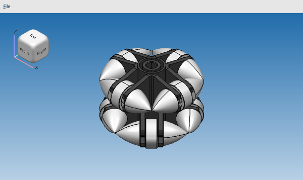

Demonstrates out-of-the-box capabilities of a 3D viewer.
The example demonstrates how to setup CAD Exchanger viewer.
C++ example uses Qt QML backend from Qt framework (https://www.qt.io).
C# examples use WPF (https://docs.microsoft.com/en-us/dotnet/framework/wpf) and Windows Forms (https://docs.microsoft.com/en-us/dotnet/desktop/winforms)
The example reads a STEP file with the help of STEP_Reader and displays parts using their B-Rep representations.
The example starts in the main GUI thread. During execution (import, meshing and displaying) additional worker threads can be internally created. Depending on complexity of the imported model, individual parts can be displayed one by one (in a way similar to the CAD Exchanger GUI application).

|
To build the C++ example provide a path to the Qt library files using the -DQT_ROOT_DIR=<path_to_qt_directory> switch.
Make sure you set PATH or LD_LIBRARY_PATH or DYLD_LIBRARY_PATH variables to Qt dynamic libraries.
You can try this example with the following model:
./examples/models/omni_wheel.stp